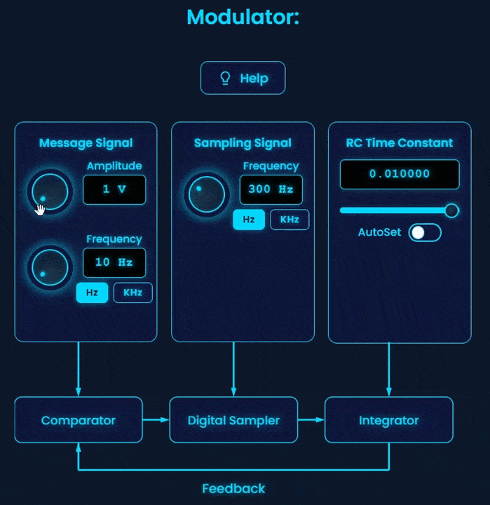
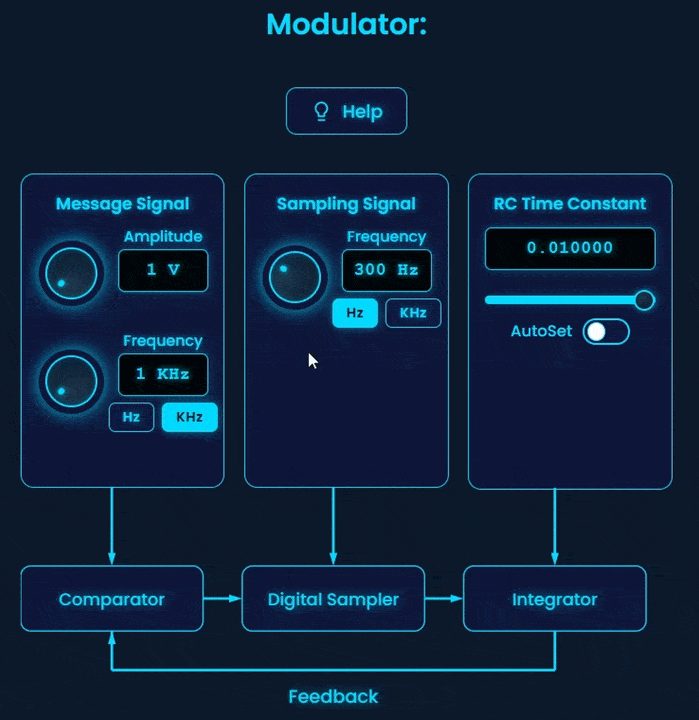
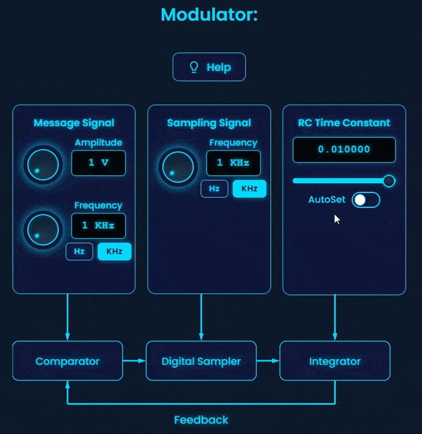
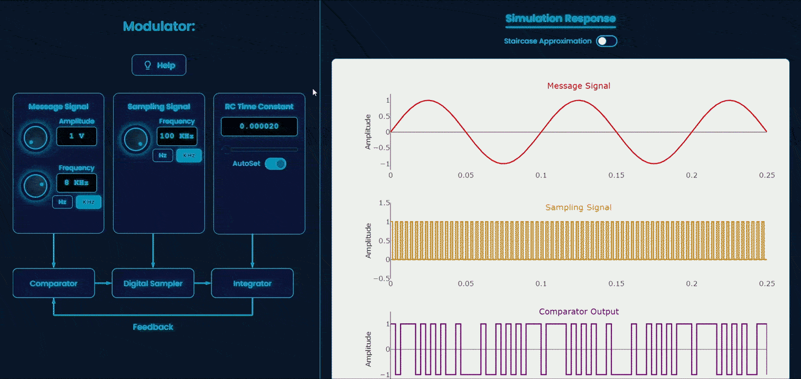
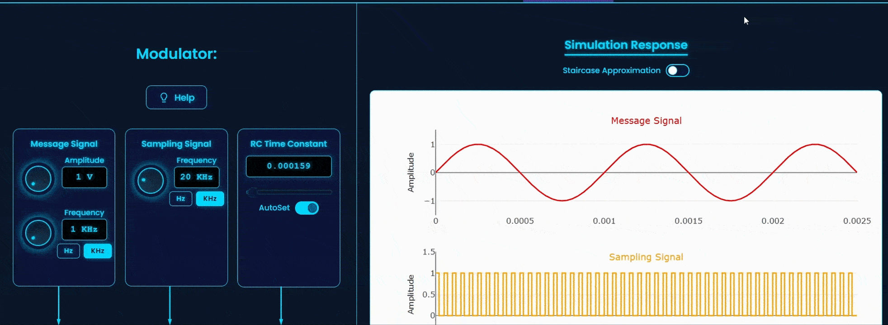
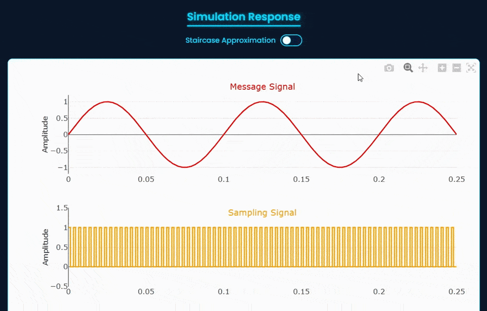

Procedure
1. Specify the amplitude and frequency of the message signal.

2. Specify the frequency of the sampling pulse.

3. Specify the RC time constant value. (The value is used to determine the step size).
The AutoSet switch automatically sets the RC time constant such that the integrator output follows the message signal with minimal noise.

4. No input parameters are required for the demodulator block.
5. Click "Simulate" to simulate and display all the plots.

6. Observe the plots and review key metrices.
7. Experiment with your own input and simulation parameters.
Note:
• The Staircase Approximation switch toggles the display of the staircase approximation plot over the message signal, allowing the study of the effect of step size on noise.

• The view of the plot can be modified using the tools available at the top-right corner of the plot.
